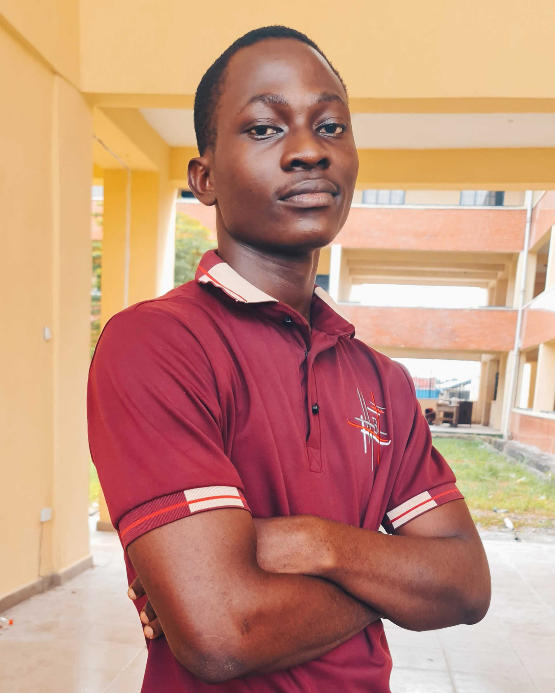
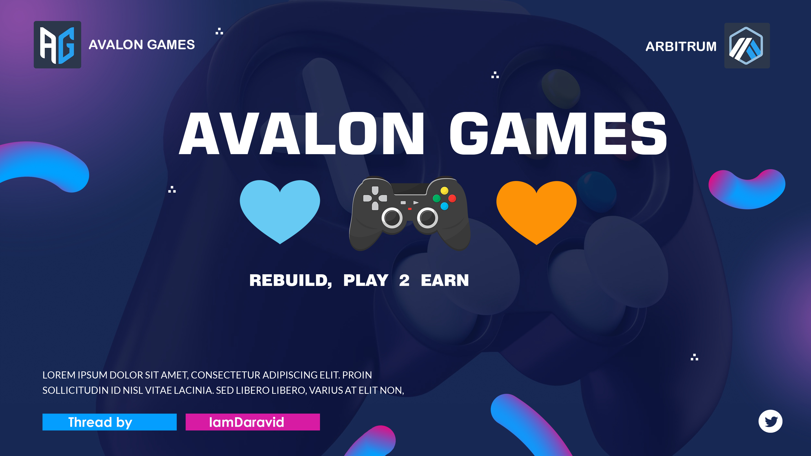
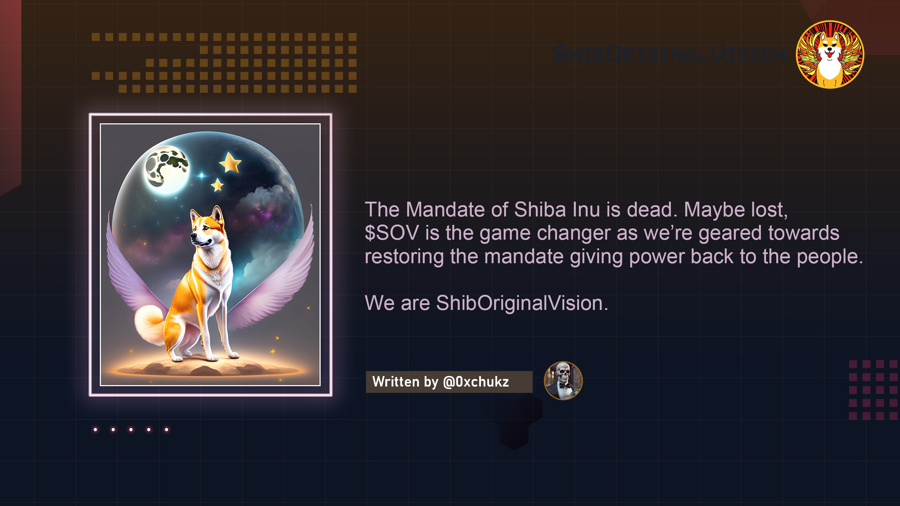

Hello
I am Ogbonna U Wisdom
I am a graphics designer and a frontend developer.


Introduction
Graphics design and Web development has been part of my life for the past 3 years and has grown along with me. I have been able to get jobs from different organizations and individuals within and without the university, creating banners,flyers and websites around campus.
SKILLS
A creative journey mastering image editing, from enhancing photos to designing captivating visuals.
Adobe Photoshop
Unleashing imagination through vector art, crafting logos and illustrations that
Adobe Illustrator
Capturing moments frozen in time, turning emotions into visual stories with every
Photography
Building the digital world, coding websites that come alive and connect people globally.
Web Development
PROJECTS
Design Projects


